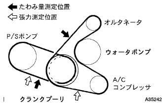

Vベルト 取り付け |
| 1. ベーンポンプVベルト(パワステベルト)取り付け |
Vベルトを各プーリに仮付けする。
| 2. ベーンポンプVベルト(パワステベルト)調整 |
 |
Vベルトの張力を調整し、調整用ボルトBを締付ける。
固定用ボルトAを締付ける。
| 3. ファン ＆ オルタネータ Vベルト取り付け |
Vベルトを各プーリに仮付けする。
| 4. ファン ＆ オルタネータ Vベルト調整 |
 |
ハブナットレンチまたはバーなどを使用して、オルタネータを車両フロント側に引いて、フアン & オルタネータVベルトの張力を調整する。
 |
調整用ボルトAを締め付けてから、固定用ボルトBを締め付ける。
| 5. Vリブドベルト点検 |
|  |
張力およびたわみ量点検
| 新品取り付け時 [ｍｍ] | 点検時 [ｍｍ] | |
|---|---|---|
| Vベルト | 8.0-9.0 | 12.5-13.5 |
| P/Sベルト | 8-10 | 11-13 |
| 新品取り付け時 [N{ｋｇｆ} ] | 点検時 [N{ｋｇｆ} ] | |
|---|---|---|
| Vベルト | 700-800 {71-82} | 300-400 {31-41} |
| P/Sベルト | 441-539 {45-55} | 245-343 {25-35} |
| 6. エンジンアンダ カバー RH取り付け |
スクリュー2個およびボルト2本で、エンジンアンダーカバーRHを取り付ける。
ナットを、締め付ける。